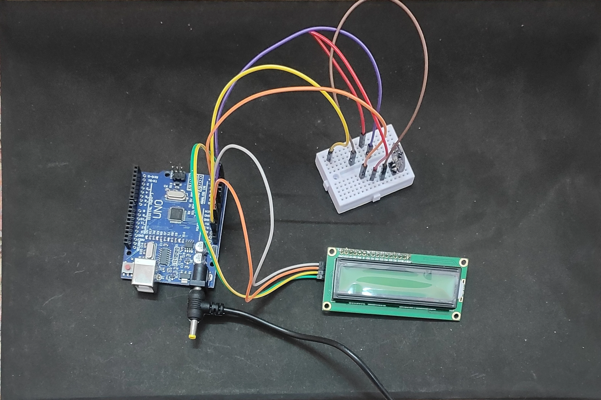

I am a passionate science student with a keen interest in Biology, Healthcare, Technology, and Innovation. I enjoy exploring new concepts, participating in science projects, and applying knowledge to solve real-world problems. My goal is to build a successful career in the medical field while continuously learning and growing.
Know MoreClass 10 Board Result, Class 11 Medical Studies, Academic Achievements, and Learning Journey.
Arduino-Based Pulse Oximeter, Science Models, Research Activities, and Innovation Projects.
Certificates, Competitions, School Activities, and Co-curricular Accomplishments.

This project demonstrates the measurement of pulse rate using Arduino and a heart-rate sensor. The system displays real-time pulse readings on an LCD screen and helps understand the practical application of biomedical electronics in healthcare technology.